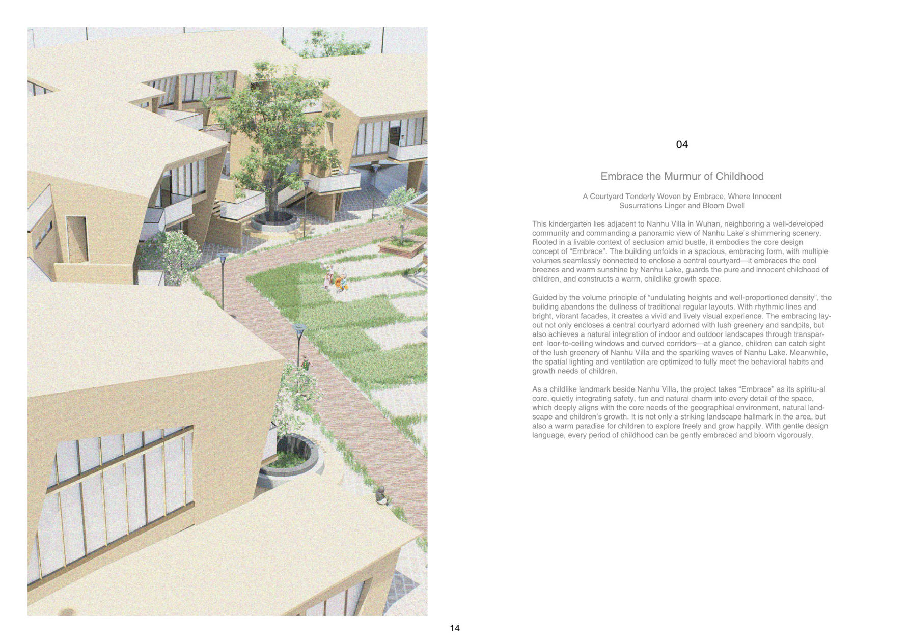
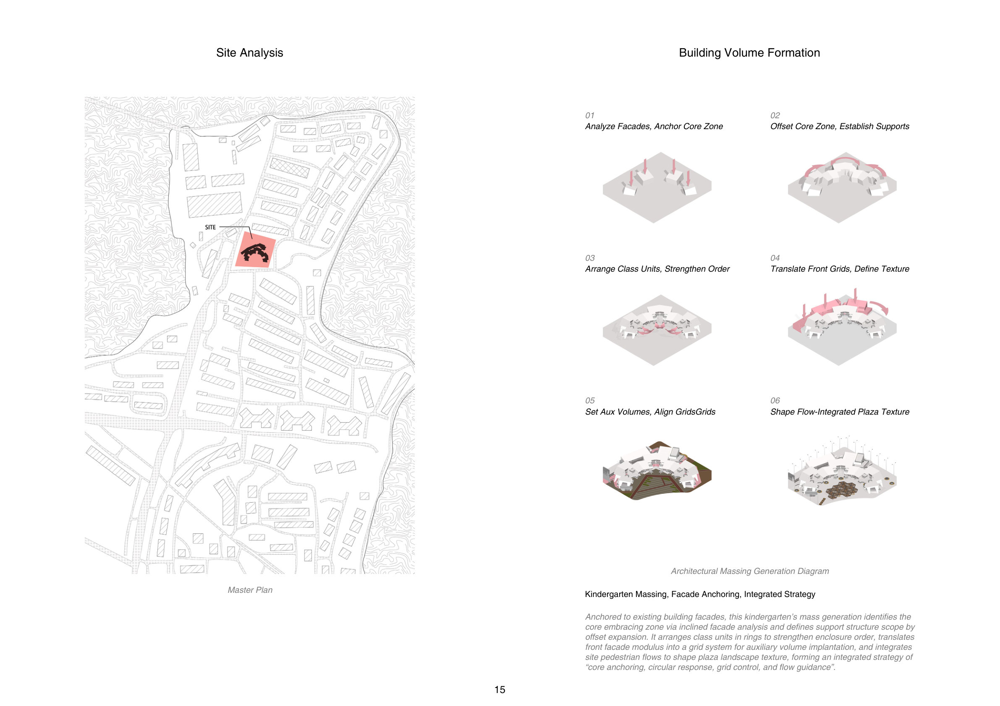
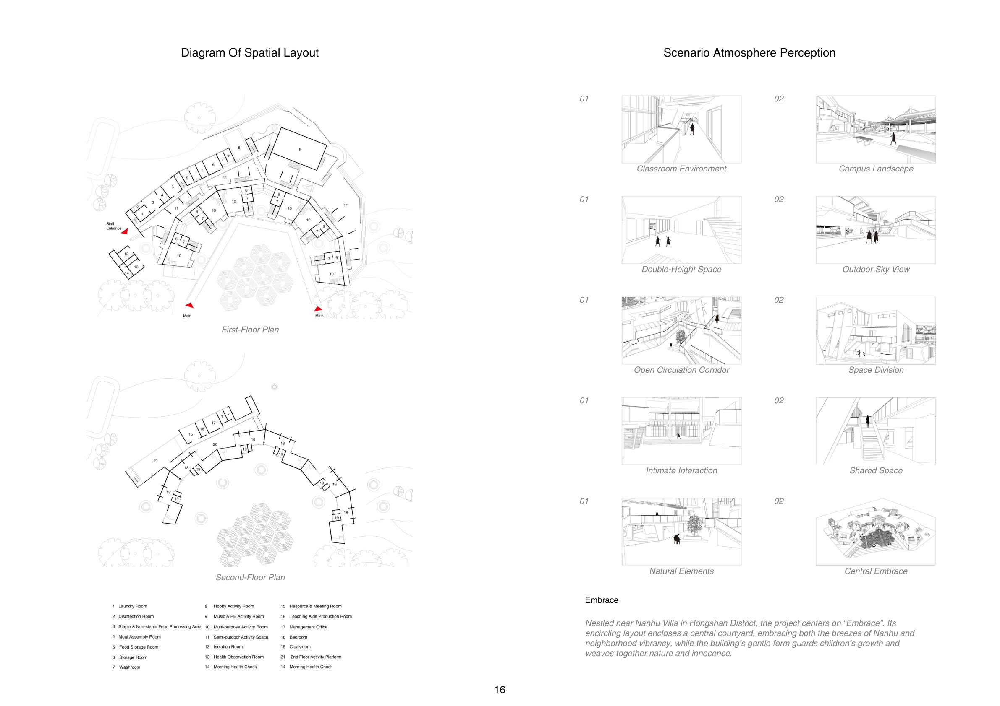
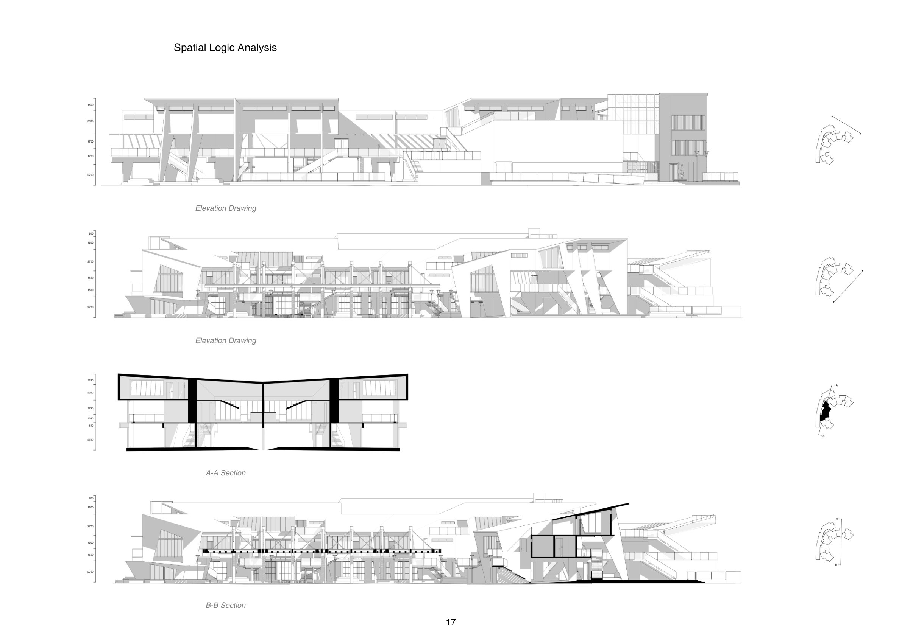
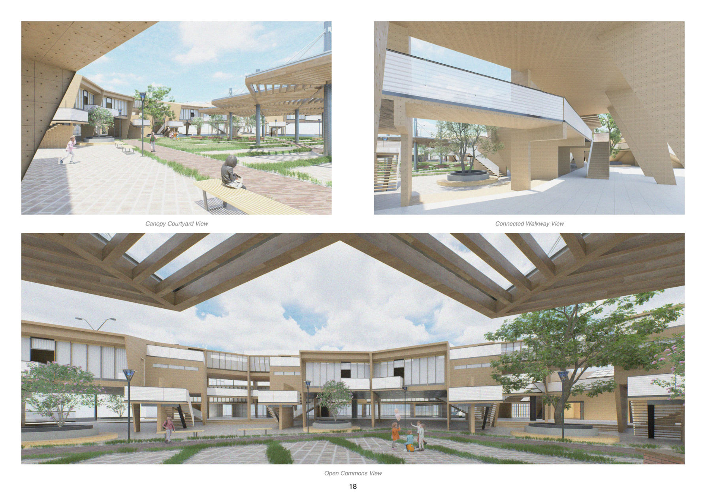

A Courtyard Tenderly Woven by Embrace, Where Innocent Susurrations Linger and Bloom Dwell
Adjacent to Nanhu Villa in Wuhan, commanding a panoramic view of Nanhu Lake's shimmering scenery, this kindergarten embodies the core concept of "Embrace". Multiple volumes seamlessly connect to enclose a central courtyard — embracing the cool breezes and warm sunshine by the lake, and guarding the pure and innocent childhood of its children.
Guided by the volume principle of "undulating heights and well-proportioned density", the building abandons the dullness of regular layouts. Rhythmic lines, bright vibrant facades, transparent floor-to-ceiling windows and curved corridors blend indoor and outdoor landscapes naturally. Safety, fun and natural charm weave into every detail — a warm paradise where every period of childhood is gently embraced and blooms vigorously.




